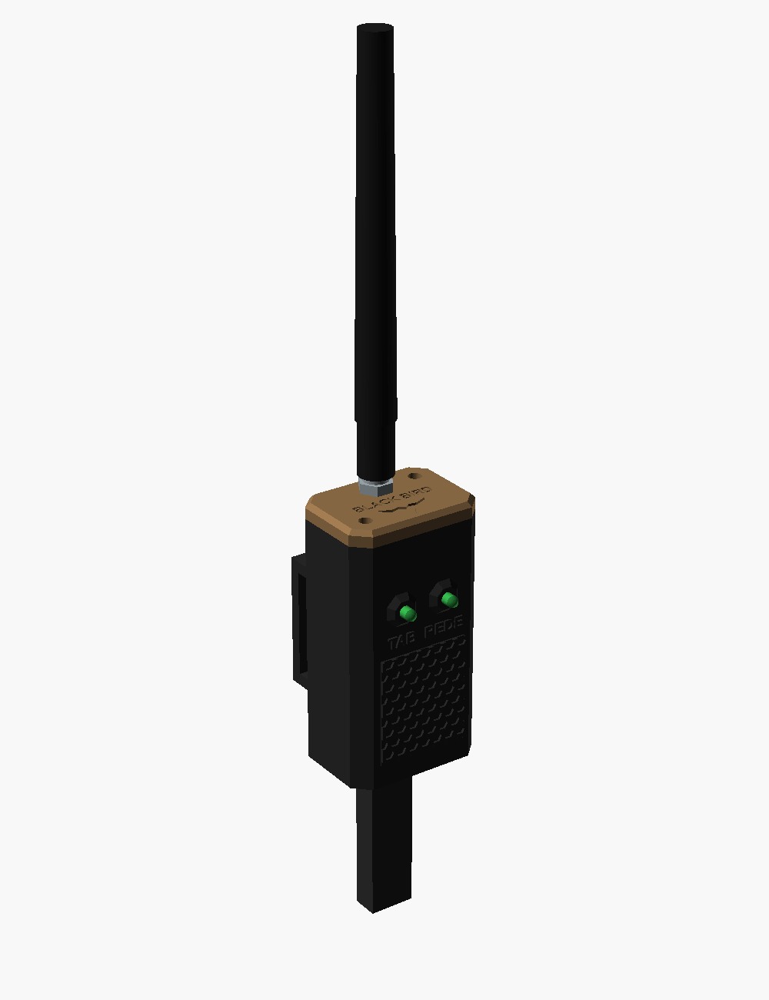

Amplificador de Rede dos Tablets
Para o LA CATEDRAL BATTLEFIELD funcionar num campo grande, sem roteador e sem internet. Ao lado de cada tablet vai uma caixinha com uma ESP32-C3 e antena: o tablet se conecta no Wi-Fi dela, e ela repassa tudo o que o jogo manda para as outras caixinhas pelo rádio de longo alcance da Espressif (o mesmo do TESTE_ALCANCE). Caixinha sem tablet vira repetidor sozinha. A energia vem do powerbank (02). Medidas em milímetros.
Encoste um cartão de crédito/débito na tela e mova o controle até o retângulo ter exatamente o mesmo tamanho (85,6 × 54 mm).
px/mm01Visão geral
Por que intermediário: a montagem é fácil (placa, 2 LEDs e uma antena), mas é preciso gravar o código em cada rádio, instalar o APK novo do Battlefield em todos os tablets e testar o alcance no campo antes do jogo.
02Como funciona
| Parte | O que faz |
|---|---|
| Rede do tablet | Todos os rádios criam a mesma rede Wi-Fi LACATEDRAL-JOGO (senha lacatedral). O tablet se conecta na mais forte, que é a do rádio do lado dele. Sem internet e sem roteador |
| Repasse | Tudo o que o Battlefield manda (porta 47800) o rádio corta em pedaços de até 236 bytes e manda pelo ar, em ESP-NOW longo alcance (bem mais longe que o Wi-Fi comum, só que mais devagar). Os outros rádios montam de novo e entregam ao tablet deles |
| Notícia de ponto em ponto | O jogo já manda o placar de todos os pontos que conhece. Então, se A alcança B e B alcança C, a notícia de A chega em C pelo tablet de B |
| Repetidor | Rádio sem tablet conectado vira repetidor sozinho: repassa o que ouve (até 2 vezes). Ponha no alto, no meio do caminho entre dois pontos que não se alcançam. Ele também usa um powerbank (02) |
| LED TAB | Aceso = tablet conectado no rádio · piscadinha a cada 2 s = ligado, sem tablet (modo repetidor) |
| LED REDE | Aceso = ouve outro rádio com sinal bom · pisca devagar = sinal fraco · apagado = não ouve ninguém |
| Página de diagnóstico | Celular na rede LACATEDRAL-JOGO, abra http://192.168.4.1: mostra os rádios que ele ouve, o sinal de cada um (dBm) e quantas mensagens passaram |
LaCatedralBattlefield.apk novo (18/10/2026) manda as mensagens grandes em pedaços de até 1100 bytes, que passam inteiros pelo rádio. Instale o APK novo em todos os tablets (ele continua funcionando igual no roteador comum).03O aparelho


3DPeças 3D · estilo tático facetado
Todas as peças impressas, nas cores de impressão (coyote e preto); cada peça sai de uma cor só. Arquivos em 3D/stl; quantidades, ferragens e configuração no 3D/LEIA-ME.txt.

04Componentes (por rádio)
| Componente | Medidas (mm) | Função |
|---|---|---|
| ESP32-C3 SuperMini (a do kit de 5) ou ESP32-C3 SuperMini Plus com conector de antena IPEX | 18 × 22,5 | Rede Wi-Fi do tablet + rádio de longo alcance |
| Antena 2,4 GHz 3 dBi RP-SMA + cabinho IPEX → RP-SMA de painel (só na versão Plus) | furo Ø 6,6 | Alcance bem maior que a antena de cerâmica da placa |
| 2 LEDs 3 mm (verde e amarelo) + 2 resistores de 220 Ω | furo Ø 3,2 | LED TAB e LED REDE |
| Cabo USB-A → USB-C (vem com o powerbank 02) | — | Energia: 2ª saída do powerbank |
| Fita de velcro 25 mm | ≈ 60 cm | Prende no poste, acima do tablet |
| 2 parafusos M3 × 10 Allen | — | Tampa |
Peças impressas (pasta 3D) | — | caixa, tampa, 2 calços, tampão da antena (se não usar antena) |
05Ligação elétrica
Sem escala. Na sua SuperMini, atrás, só aparece o número do pino: "3" = GPIO3, "4" = GPIO4, "G" ou "GND" = terra.
| De | Para | Observação |
|---|---|---|
| Pino 3 (GPIO3) | 220 Ω → LED TAB, perna longa | Perna curta no GND |
| Pino 4 (GPIO4) | 220 Ω → LED REDE, perna longa | Perna curta no GND |
| USB-C da placa | Powerbank (02), 2ª saída | Também é por ele que você grava o código |
| Conector IPEX da placa (versão Plus) | Cabinho → RP-SMA da tampa → antena | Veja abaixo, peça por peça |
A antena, peça por peça
A antena não é soldada: é tudo de encaixe e rosca. Ela é ligada à placa por um cabinho fino (o "pigtail"): numa ponta tem um plugue minúsculo que encaixa na placa (IPEX), na outra um conector de rosca que fica preso na tampa (RP-SMA), e a antena rosqueia nele por fora.
- Confira o kit: a ponta pequena do cabinho tem que ser IPEX / U.FL (também chamada MHF1). Não serve "MHF4": é menor e não encaixa. A ponta grande e a antena têm que ser do mesmo tipo (RP-SMA com RP-SMA). Comprando o kit inteiro, já vem certo.
- Encaixe o IPEX primeiro, com a placa ainda fora da caixa: ponha o plugue bem em cima do conector dourado, reto, e aperte com a unha ou com o dedo até sentir um clique. Para tirar, levante reto com a unha. Nunca puxe pelo fio.
- Prenda o conector grande na tampa: tire a porca e a arruela dele, passe o corpo por baixo da tampa, pelo furo, ponha a arruela e a porca por cima e aperte (com alicate, sem força exagerada).
- Feche: desça a placa nas guias (USB-C para baixo), acomode o cabinho em curva larga, sem passar por cima do USB-C, e feche a tampa com os 2 M3 × 10.
- Por último, a antena: rosqueie por cima, só com a mão, e deixe em pé (é assim que ela alcança mais longe).
http://192.168.4.1, compare o sinal dos outros rádios com e sem a antena rosqueada. Se não mudar nada, me mande uma foto bem de perto da sua placa que eu mostro onde mexer.06Montagem passo a passo
- Primeiro o teste de alcance: se ainda não fez, use o
LA CATEDRAL BATTLEFIELD/RADIO/TESTE_ALCANCEno campo. Ele mostra se a antena da placa basta ou se precisa da versão com antena externa e de repetidores. - Grave o código em cada rádio: Arduino IDE, pacote esp32 da Espressif 3.x, placa "ESP32C3 Dev Module", USB CDC On Boot: Enabled; abra
AMPLIFICADOR_REDE/AMPLIFICADOR_REDE.inoe carregue. É o mesmo código em todos (sem mudar nada). Se não gravar: segure BOOT, aperte e solte RESET, solte BOOT. - Teste na mesa: ligue 2 rádios no USB. Em segundos o LED azul da placa acende (um ouve o outro). No celular, conecte em LACATEDRAL-JOGO e abra
http://192.168.4.1: o outro rádio aparece na lista. - Imprima seguindo o
3D/LEIA-ME.txt. - LEDs: solde um resistor de 220 Ω na perna longa de cada LED. Encaixe os LEDs por dentro nos furos da frente. Fios: verde (TAB) no pino 3, amarelo (REDE) no pino 4, as pernas curtas juntas no GND.
- Antena (versão Plus): siga o desenho "A antena, peça por peça" (seção 05): IPEX na placa primeiro, depois o conector grande na tampa (porca por fora). Na SuperMini comum, ponha o tampão no furo.
- Placa: desça a ESP32-C3 nas guias com o USB-C para baixo, depois os 2 calços. Feche a tampa com 2 M3 × 10 e rosqueie a antena.
- App: instale o
LaCatedralBattlefield.apknovo em todos os tablets. Em cada tablet: Wi-Fi → LACATEDRAL-JOGO → senhalacatedral. Quando o Android avisar "sem internet", toque em manter conexão. - No campo: rádio no poste acima do tablet (2 m ou mais é o ideal), com a antena em pé; cabo na 2ª saída do powerbank. Confira o LED REDE de cada ponto. Ponto com LED REDE apagado ou piscando: ponha um repetidor no alto, no meio do caminho.
07Custo de produção
Valores de out/2026, sem frete, só produtos novos (os links do Mercado Livre já abrem com o filtro "Novo"). A SuperMini Plus com IPEX é difícil de achar no Mercado Livre (na loja nacional que achei custa ≈ R$ 115; no AliExpress ≈ US$ 5–13): os valores dela são estimativas. Peças impressas não entram.
| Item | Onde | Fica para | Menor | Maior |
|---|---|---|---|---|
| ESP32-C3 SuperMini comum (do kit de 5 do cronógrafo, 04) | Mercado Livre | — | R$ 16,00 | R$ 20,00 |
| ou ESP32-C3 SuperMini Plus com IPEX | Mercado Livre | — | R$ 35,00 | R$ 60,00 |
| Antena 2,4 GHz 3 dBi + cabinho IPEX → RP-SMA (só com a Plus) | Mercado Livre | — | R$ 19,00 | R$ 25,00 |
| 2 LEDs 3 mm + 2 resistores 220 Ω | você já tem (LEDs e kit de resistores) | — | R$ 0,00 | R$ 0,00 |
| Cabo USB, velcro e parafusos | sobras do powerbank (02) e do kit M3 | — | R$ 0,00 | R$ 0,00 |
| Por rádio, com a SuperMini comum | ≈ R$ 16 | ≈ R$ 20 | ||
| Por rádio, com a Plus + antena | ≈ R$ 54 | ≈ R$ 85 | ||
| 6 rádios (5 tablets + 1 repetidor) com a Plus + antena | ≈ R$ 324 | ≈ R$ 510 | ||
Cada repetidor precisa também de um powerbank (02). Com a SuperMini comum, 6 rádios = um kit de 5 + 1 avulsa (≈ R$ 100–125).
08Pontos de atenção
CANAL no código (o mesmo em todos os rádios).LA CATEDRAL BATTLEFIELD/LaCatedralBattlefield.apk.